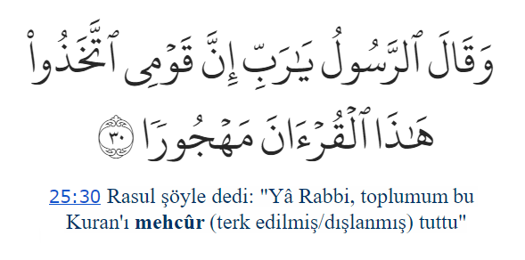

Neden bu sunumlara ihtiyaç duyduk? Çünkü Furkan suresinde şu ayet var:
"Hayır, biz onu mehcûr tutmadık, anlamaya uğraştık" diyebilmek için...
Elbette üç buçuk saat sunum dinlemekle Arapça öğrenilmez, ama Kerim Kitabımızı anlamakta önemli bir adım olabilir.